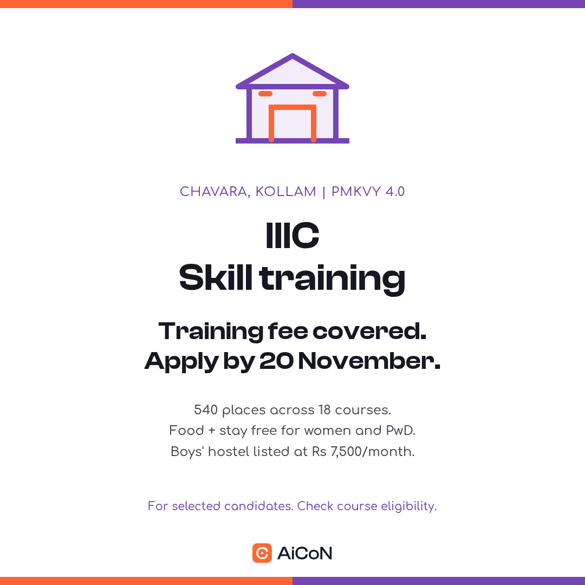

IIIC Chavara: free training fee for 18 skill courses. Apply by 20 November
Looking for practical construction or hospitality training in Kerala? IIIC at Chavara, Kollam, has invited applications for PMKVY 4.0 short-term training. Its official notice lists 540 places across 18 courses, with 30 trainees per course. The deadline is Friday, 20 November 2026.

Who can consider it?
IIIC says Indian citizens from all categories may apply. Training takes place at its Chavara campus, so plan for travel or a stay in Kollam. This is not an online course. Each course has its own education requirement; being eligible to apply does not guarantee selection or a seat.
The public form offers several routes for different qualifications:
- Class 10: Assistant Electrician, arc welding and Front Office Assistant are among the listed choices.
- Class 12: options include plumbing, solar PV installation, construction electrical work, brick masonry, civil draughting, HVAC and hospitality roles.
- Diploma or engineering study: Roadway Surveyor requires a civil diploma; the construction junior-supervisor option lists a three-year diploma after Class 10. MEP maintenance supervision lists mechanical, electrical or civil B.Tech qualifications.
The Surveyor entry has a separate degree-study or Class 12-plus-experience route. Read its complete requirement in the form before choosing. Do not treat one course's qualification as applying to the other 17.
Duration and costs to check
Most listed durations run from 390 to 600 hours, depending on the course. The form leaves the Front Office Assistant hour count to be confirmed. Ask IIIC about the daily timetable, start date, attendance rules and any costs outside the covered training fee. Do not assume free travel, equipment or accommodation for every applicant.
Prepare before opening the form
- Start at the official IIIC admission page and follow its application link. This helps distinguish the institute's form from a forwarded copy.
- Compare your qualification with the course requirement. Keep your highest qualification and the college name and state handy.
- The public form asks for your name, email, mobile number, state, district, qualification, course, sex, category and hostel preference. Review the hostel cost and entitlement before answering.
- Check every entry before submitting. Contact IIIC on 8078980000 for unclear eligibility, PwD accommodation, fees or course details.
What AiCoN checked
We followed the link on IIIC's official admission page and opened the public application form on 17 November. Its course choices, fields, deadline and hostel note were readable without signing in. We entered no personal information and did not submit an application. We did not test selection, training quality, certification or placement. This is an admission and application-preparation guide, not a promise of a job or an admission-success report.
Neither the notice nor the checked form specifies a closing hour. Apply ahead of 20 November rather than assuming midnight. The advertised total is an intake figure, not a live count of seats remaining.